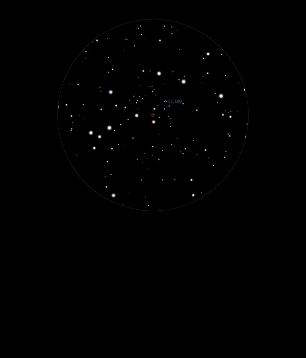

NGC 188
Open Cluster in Cepheus
NGC 188
Mag 8.1
Caldwell
1
30/09/13
Very
small and sparse open cluster, just resolved in 12mm but in a
nice starfield (Had not realised what an interesting starfield
Polaris sits in!)
21/05/15
Just out of same 25mm FOV as Comet Lovejoy
Sparse, faint and ragged and rather disappointing
02/02/16
Very faint but quite dense Open Cluster with not all stars
resolved in 12mm
Sits within a parallelogram of stars of Mags 8.15, 8.70, 9.55,
HIP 3354 and 9.75, HIP 3297
I wonder why the two brighter stars don't have HIP numbers?